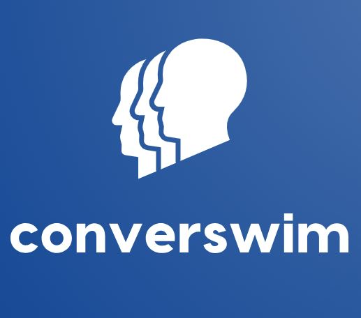

A conversation reflection app
For my senior year capstone, I had the opportunity to work alongside Annuska Zolyomi to design an application called Converswim, a conversation reflection tool meant to be used by autistic adults. The motivation to develop this app came from prior research conducted by Zolyomi which explored the challenges that autistic adults face in reading emotion, body language, and other non-verbal social cues when it comes to conversating with neurotypical individuals.

Most of my capstone work was done in the design phase, in which I was able to conduct several usability studies with a paper-prototype that demonstrates initial screen designs and intended interactions of the application. During our research, our goal was to acquire data on the usability of the application, feature usage, and overall first impressions. My research team consisting of Professor Zolyomi, Hiba Hasan, a Psychology student at UW Bothell, and I received insightful feedback on how to continually optimize the app to assure that the application suits our target users’ needs.
The next steps of this project would be to start implementing the prototype into a functional web application. This would entail choosing an appropriate framework to develop the user interface and database to support image customization requests. My recommendation is React (with Javascript, HTML, and CSS) to develop the UI. To support image requests, I would utilize a combination of an object storage system such as Amazon S3 with a NoSQL database such as MongoDB to handle image history queries. These next steps yield a great project for capstone students to take on in the future.